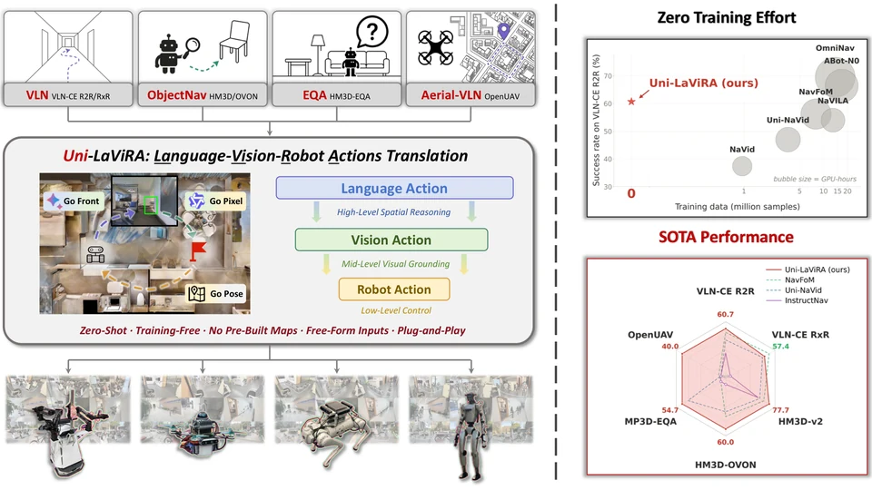
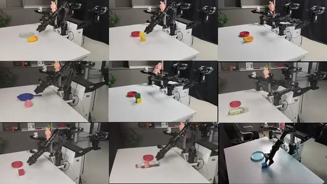
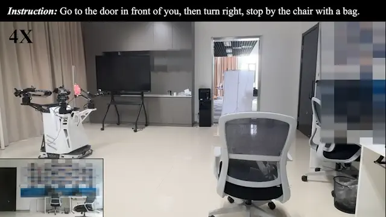
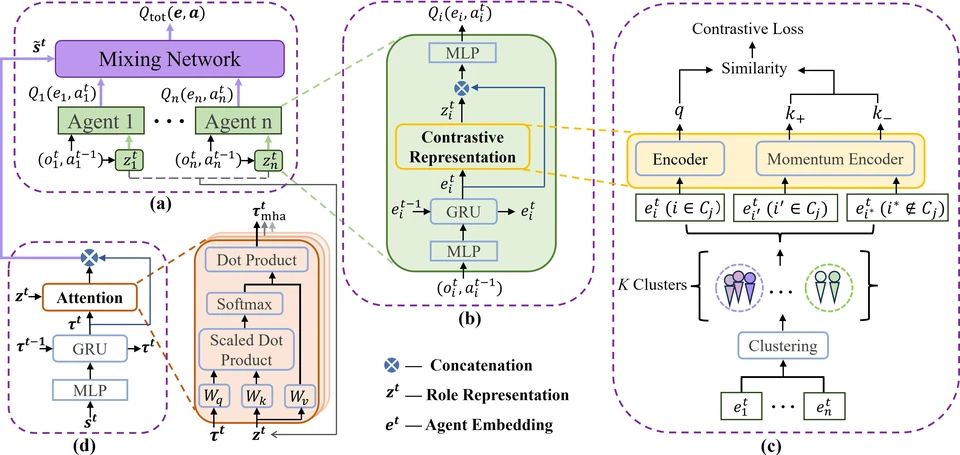
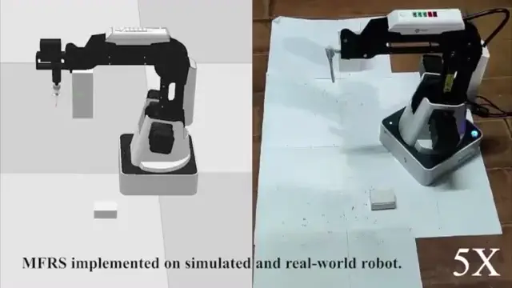

Recent Activities
-
V-Dreamer received the Best Paper Award at the ICRA 2026 Workshop on Generative Digital Twins for Real2Sim and Sim2Real Transfer! Congrats to Songjia!
-
Our latest work on unified embodied navigation, Uni-LaViRA, was released and open-sourced.
-
LaViRA was accepted to ICRA 2026! Congrats to Team LaViRA!
-
Our zero-shot vision-language navigation work, LaViRA, was released and open-sourced.
Selected Publications

V-Dreamer: Automating Robotic Simulation and Trajectory Synthesis via Video Generation Priors
🏆 ICRA 2026 Workshop Best Paper Award
A fully automated framework that turns language instructions into simulation-ready scenes and executable robot trajectories using video generation priors.

LaViRA: Language-Vision-Robot Actions Translation for Zero-Shot Vision Language Navigation in Continuous Environments
ICRA · 2026
A zero-shot VLN framework that decomposes navigation into language, vision, and robot actions for stronger generalization in continuous environments.

Attention-Guided Contrastive Role Representations for Multi-Agent Reinforcement Learning
ICLR · 2024
Attention-guided contrastive role representations for heterogeneous behavior and coordination in multi-agent reinforcement learning.

Magnetic Field-Based Reward Shaping for Goal-Conditioned Reinforcement Learning
IEEE/CAA JAS · 2023 (CAS Zone 1, Top Journal, IF: 18.3)
A magnetic-field-based reward shaping method for efficient exploration and goal-reaching in goal-conditioned reinforcement learning.
Education
-
(expected)
Nanjing University & Institute of Automation, Chinese Academy of Sciences
Ph.D. Student in Computer Science and Engineering
Supervised by Assoc. Prof. Jing Huo and Prof. Yifan Zhang
-
M.Eng. in Control Science and Engineering
Advised by Assoc. Prof. Zhi Wang and Prof. Chunlin Chen
-
East China University of Science and Technology
B.Eng. in Mechanical Design, Manufacturing and Automation
Internships
-
Intern · Mentored by Tingguang Li